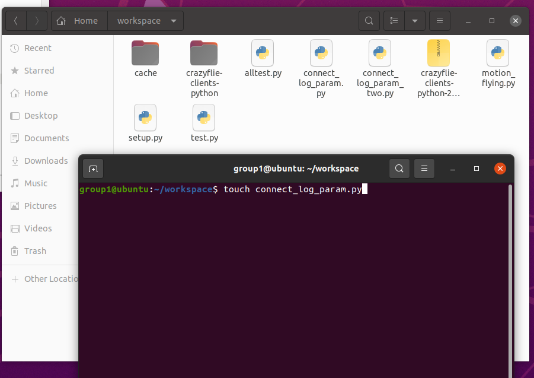
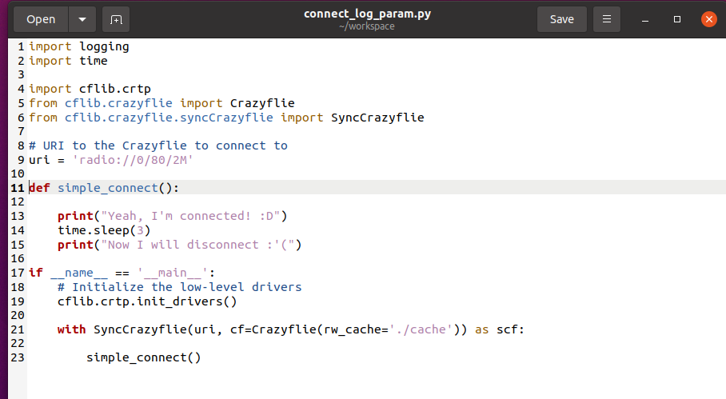
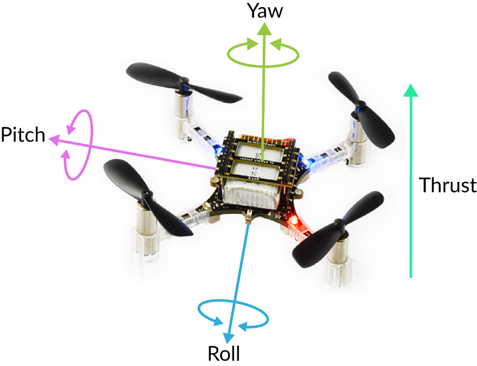
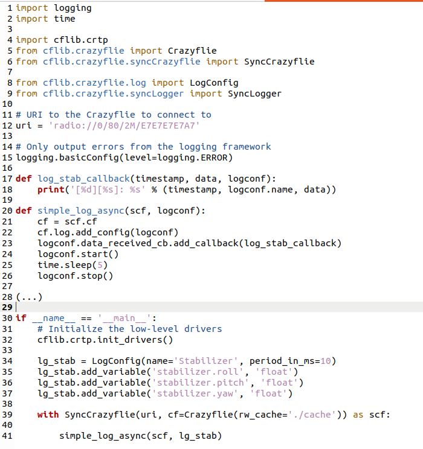
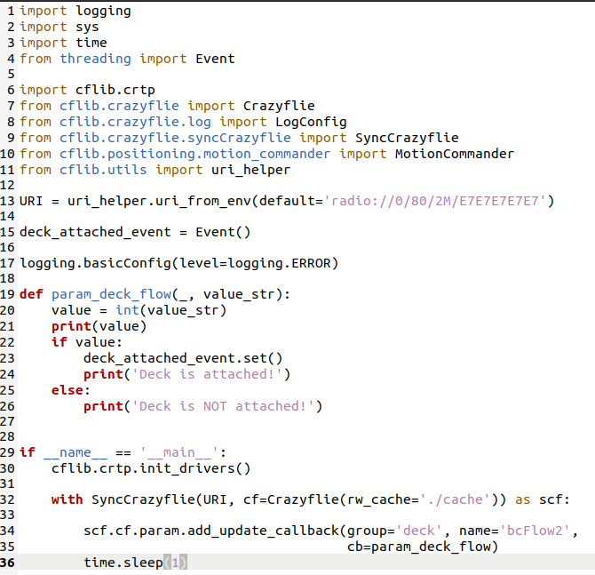
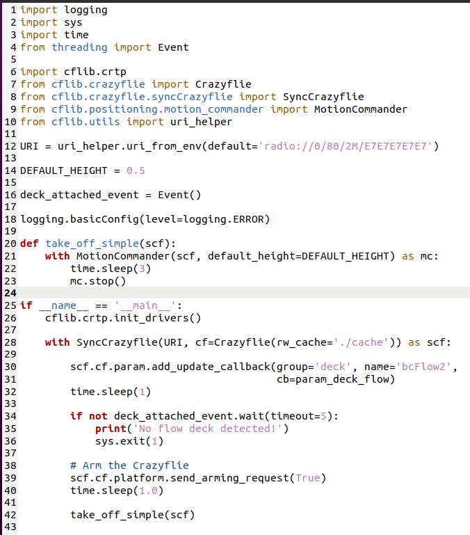
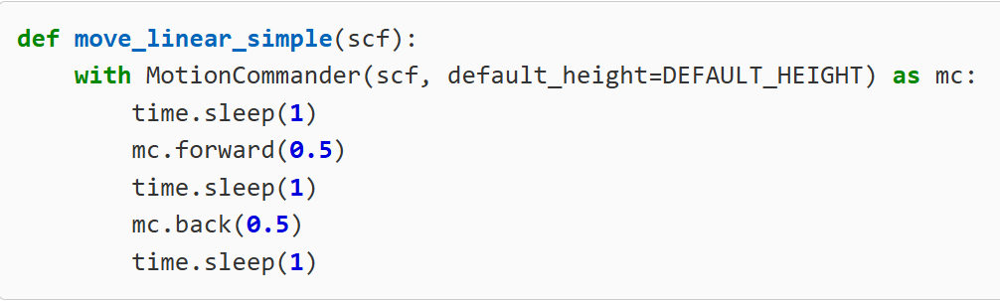
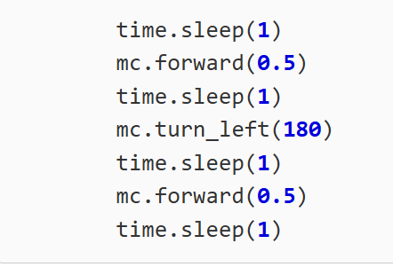
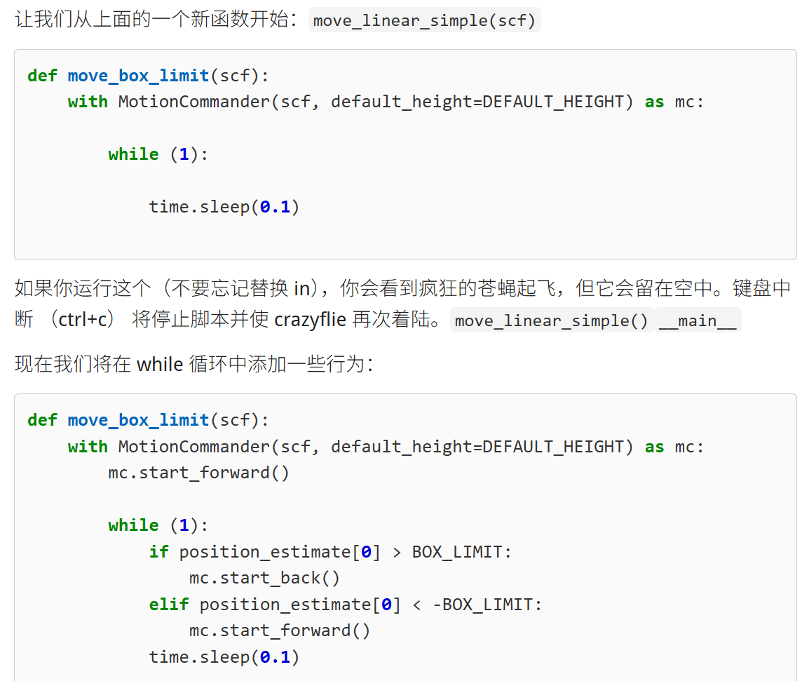

实验 9: cflib 库编程
cflib Programming
实验目标
学习通过 python脚本连接到Crazyflie。
学习cflib库的编程基础。
学习使用无线连接的方式在终端中监控飞行数据。
实验准备
实验四已经配置好连接到无人机的客户端的虚拟机系统。并且需要具备前几门实验已经积累的linux系统操作经验。再需要一点的python编程基础。
实验步骤
本次实验将主要进行python脚本的运行，所有的编程库的调用，皆来自于官方的网址教程：用户指南 |比特热潮
若在进行实验中遇到一些困难，也可点击上述网址进行进一步的参考。同时部分操作和知识要点也在上节课的实验手册中有提及，如有不会的地方可以再参考上节的实验手册，这部分操作这节实验手册不再赘述。
使用cflib编程以无线的方式连接到无人机
在workspace的终端下使用touch命令创建python文件，如下图所示。
touch connect_log_param.py
直接在图形化界面点击创建好的文件即可直接图形化编辑。如果有余力的同学也可以自选编辑器。

对于一个python程序而言，我们首先在第1、2行导入标准的python库，再在4到6行导入cflib的库，本节实验也将主要带大家认识学习cflib库的一些用法。在该小节实验中，我们将理解使用python语言调用cflib库用无线模块crazyradio连接到无人机。
在第11行我们定义了一个叫做simple_connect的函数，函数的主要内容为在终端输出字符"Yeah, I'm connected! :D"，然后程序保持sleep3秒，再输出字符"Now I will disconnect :'("。
在17行，开始我们的python主程序，首先在19行调用cflib的库函数使得无人机各项设备初始化，然后在21行将创建一个具有指定link_uri的同步 Crazyflie 实例，以无线连接的方式创建，从21行开始，我们设定的主程序将会在这里执行，若没有循环的程序语句让程序不停地执行，则该同步 Crazyflie 实例将会在按照顺序执行完语句之后自动销毁，断开无线连接，程序结束。
import logging
import time
import cflib.crtp
from cflib.crazyflie import Crazyflie
from cflib.crazyflie.syncCrazyflie import SyncCrazyflie
# URI to the Crazyflie to connect to
uri = 'radio://0/80/2M/E7E7E7E7E7'
def simple_connect():
print("Yeah, I'm connected! :D")
time.sleep(3)
print("Now I will disconnect :'(")
if __name__ == '__main__':
# Initialize the low-level drivers
cflib.crtp.init_drivers()
with SyncCrazyflie(uri, cf=Crazyflie(rw_cache='./cache')) as scf:
simple_connect()现在将以上python代码粘贴至新建好的onnect_log_param.py文件中，记得点击保存，然后使用如下命令运行它：
python3 connect_log_param.py注意保证crazyradio无线设备插在电脑上且能被识别到，无人机保持开启状态，记得修改对应的uri地址。
运行该程序后观察终端的输出，然后再24行再调用一次simple_connect()函数，再观察终端的输出，以便理解python程序的运行。
使用cflib记录无人机在运行时的飞行参数
在原来的python程序的基础上，我们做出如下的修改（可直接复制粘贴）：
import logging
import time
import cflib.crtp
from cflib.crazyflie import Crazyflie
from cflib.crazyflie.syncCrazyflie import SyncCrazyflie
from cflib.crazyflie.log import LogConfig
from cflib.crazyflie.syncLogger import SyncLogger
# URI to the Crazyflie to connect to
uri = 'radio://0/80/2M/E7E7E7E7E7'
# Only output errors from the logging framework
logging.basicConfig(level=logging.ERROR)
def log_stab_callback(timestamp, data, logconf):
print('[%d][%s]: %s' % (timestamp, logconf.name, data))
def simple_log_async(scf, logconf):
cf = scf.cf
cf.log.add_config(logconf)
logconf.data_received_cb.add_callback(log_stab_callback)
logconf.start()
time.sleep(5)
logconf.stop()
(...)
if __name__ == '__main__':
# Initialize the low-level drivers
cflib.crtp.init_drivers()
lg_stab = LogConfig(name='Stabilizer', period_in_ms=10)
lg_stab.add_variable('stabilizer.roll', 'float')
lg_stab.add_variable('stabilizer.pitch', 'float')
lg_stab.add_variable('stabilizer.yaw', 'float')
with SyncCrazyflie(uri, cf=Crazyflie(rw_cache='./cache')) as scf:
simple_log_async(scf, lg_stab)对比一下这个程序相较于上个程序增加了哪些内容。在运行该程序时，终端会在5秒内循环输出设定好的无人机的roll、pitch和yaw三项参数，此时将无人机拿在手中改变其姿态，将会观察到终端输出参数的变化。
四旋翼无人机的 Roll（横滚）、Pitch（俯仰） 和 Yaw（偏航） 是描述其空间姿态的三个核心参数，分别对应无人机绕 X轴、Y轴 和 Z轴 的旋转运动。


认识motion commander
上节课运行了简单的无人机起飞降落的python程序，这节实验将会带领大家详细认知python程序的细节。同样地使用touch命令创建一个名字为motion_flying.py的文件。
touch motion_flying.py将以下代码粘贴到该文件中：
import logging
import sys
import time
from threading import Event
import cflib.crtp
from cflib.crazyflie import Crazyflie
from cflib.crazyflie.log import LogConfig
from cflib.crazyflie.syncCrazyflie import SyncCrazyflie
from cflib.positioning.motion_commander import MotionCommander
from cflib.utils import uri_helper
URI = uri_helper.uri_from_env(default='radio://0/80/2M/E7E7E7E7E7')
deck_attached_event = Event()
logging.basicConfig(level=logging.ERROR)
def param_deck_flow(_, value_str):
value = int(value_str)
print(value)
if value:
deck_attached_event.set()
print('Deck is attached!')
else:
print('Deck is NOT attached!')
if __name__ == '__main__':
cflib.crtp.init_drivers()
with SyncCrazyflie(URI, cf=Crazyflie(rw_cache='./cache')) as scf:
scf.cf.param.add_update_callback(group='deck', name='bcFlow2',
cb=param_deck_flow)
time.sleep(1)
可以看到，我们在第10行导入了cflib中的motioncommander模块，我们将调用该模块的功能使得无人机进行飞行，详细的类函数，有余力的同学可以进入该网址查看：github.com
该python程序主要实现的功能为在无人机初始化的过程中检测当前无人机是否安装了flowdeck模块，该模块帮助无人机定位自身高度和检测飞行速度。
起飞功能
将已有的程序按照如下图所示的程序进行编写。（之前的param_deck_flow函数可以保留），然后运行该程序，无人机将会起飞悬停3秒后降落。第21至23行则会控制该飞行流程，第14行设置了默认起飞高度。可以适当改变这些参数来观察效果。

前进、转弯和后退
我们再在主函数前添加以下函数，将程序最后一行要调用的函数替换为该函数。（例如将刚才在上图42行调用的take_off_simple函数替换为现在的move_linear_simple函数）。该函数的作用为无人机起飞之后，悬停一秒，前进0.5米，再悬停一秒，后退0.5米，再悬停一秒，随后降落。我们通过motioncommander类实体化一个对象mc，通过调用mc的成员函数forward和back实现无人机的前进后退。

再进一步地，我们将函数的内容替换为如下：

观察无人机的运行情况，是否又回到了起飞的原地附近。
记录飞行数据
根据我们学习到的在终端中打印出无人机在实时运行时的飞行数据，参照如下代码（take_off_simple(scf)函数和param_deck_flow(name, value_str)函数可以保留，也可以如下所示无内容）：
import logging
import sys
import time
from threading import Event
import cflib.crtp
from cflib.crazyflie import Crazyflie
from cflib.crazyflie.log import LogConfig
from cflib.crazyflie.syncCrazyflie import SyncCrazyflie
from cflib.positioning.motion_commander import MotionCommander
from cflib.utils import uri_helper
URI = uri_helper.uri_from_env(default='radio://0/80/2M/E7E7E7E7E7')
DEFAULT_HEIGHT = 0.5
deck_attached_event = Event()
logging.basicConfig(level=logging.ERROR)
position_estimate = [0, 0]
def move_linear_simple(scf):
with MotionCommander(scf, default_height=DEFAULT_HEIGHT) as mc:
time.sleep(1)
mc.forward(0.5)
time.sleep(1)
mc.turn_left(180)
time.sleep(1)
mc.forward(0.5)
time.sleep(1)
def take_off_simple(scf):
...
def log_pos_callback(timestamp, data, logconf):
print(data)
global position_estimate
position_estimate[0] = data['stateEstimate.x']
position_estimate[1] = data['stateEstimate.y']
def param_deck_flow(name, value_str):
...
if __name__ == '__main__':
cflib.crtp.init_drivers()
with SyncCrazyflie(URI, cf=Crazyflie(rw_cache='./cache')) as scf:
scf.cf.param.add_update_callback(group='deck', name='bcFlow2',
cb=param_deck_flow)
time.sleep(1)
logconf = LogConfig(name='Position', period_in_ms=10)
logconf.add_variable('stateEstimate.x', 'float')
logconf.add_variable('stateEstimate.y', 'float')
scf.cf.log.add_config(logconf)
logconf.data_received_cb.add_callback(log_pos_callback)
if not deck_attached_event.wait(timeout=5):
print('No flow deck detected!')
sys.exit(1)
# Arm the Crazyflie
scf.cf.platform.send_arming_request(True)
time.sleep(1.0)
logconf.start()
move_linear_simple(scf)
logconf.stop()再执行该代码，可以看到无人机在飞行过程中，终端也在不断地输出其飞行参数。
来回游荡

再新定义加入一个名字为move_box_limit的函数，放在主函数中，同样地参考程序如下：
import logging
import sys
import time
from threading import Event
import cflib.crtp
from cflib.crazyflie import Crazyflie
from cflib.crazyflie.log import LogConfig
from cflib.crazyflie.syncCrazyflie import SyncCrazyflie
from cflib.positioning.motion_commander import MotionCommander
from cflib.utils import uri_helper
URI = uri_helper.uri_from_env(default='radio://0/80/2M/E7E7E7E7E7')
DEFAULT_HEIGHT = 0.5
BOX_LIMIT = 0.5
deck_attached_event = Event()
logging.basicConfig(level=logging.ERROR)
position_estimate = [0, 0]
def move_box_limit(scf):
with MotionCommander(scf, default_height=DEFAULT_HEIGHT) as mc:
while (1):
if position_estimate[0] > BOX_LIMIT:
mc.start_back()
elif position_estimate[0] < -BOX_LIMIT:
mc.start_forward()
def move_linear_simple(scf):
...
def take_off_simple(scf):
...
def log_pos_callback(timestamp, data, logconf):
...
def param_deck_flow(name, value_str):
...
if __name__ == '__main__':
cflib.crtp.init_drivers()
with SyncCrazyflie(URI, cf=Crazyflie(rw_cache='./cache')) as scf:
scf.cf.param.add_update_callback(group='deck', name='bcFlow2',
cb=param_deck_flow)
time.sleep(1)
logconf = LogConfig(name='Position', period_in_ms=10)
logconf.add_variable('stateEstimate.x', 'float')
logconf.add_variable('stateEstimate.y', 'float')
scf.cf.log.add_config(logconf)
logconf.data_received_cb.add_callback(log_pos_callback)
if not deck_attached_event.wait(timeout=5):
print('No flow deck detected!')
sys.exit(1)
# Arm the Crazyflie
scf.cf.platform.send_arming_request(True)
time.sleep(1.0)
logconf.start()
move_box_limit(scf)
logconf.stop()运行脚本，会看到无人机将开始来回移动，直到按ctrl+c停止程序。它根据日志记录输入更改其命令，即状态估计 x 和 y 位置。一旦它表明它达到了“虚拟”限制的边界，它就会改变它的方向。